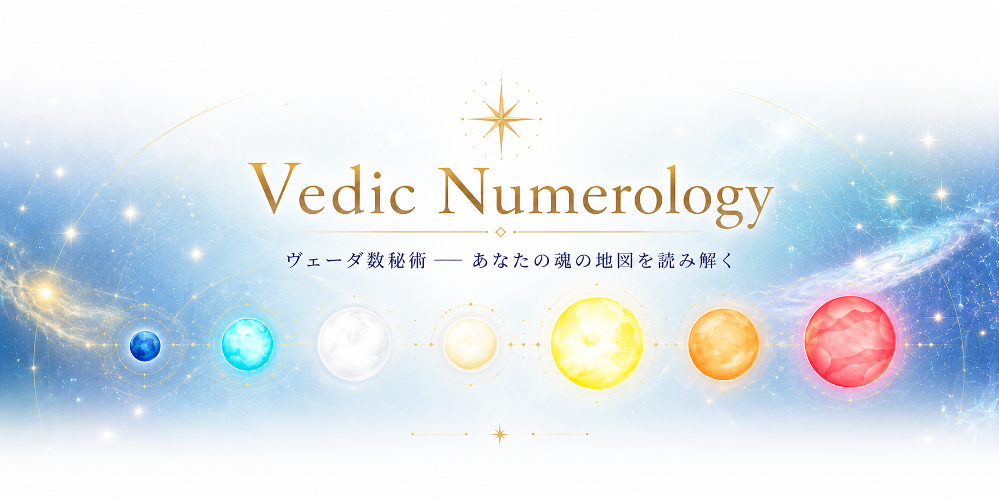

インドの古代哲学をもとにした数字の占術です。生年月日から3つの核となる数字を導き出し、その数字に対応する惑星のエネルギーがあなたの性格・人生の方向性・時代の影響を表すと考えます。数字は1〜9のみ使い、すべて最終的に1桁に還元します。
ヴェーダ数秘術では、魂は輪廻転生（reincarnation）を繰り返し、前世から持ち越した課題を今世で学ぶために生まれてくると考えます。あなたのムーランク（誕生数）は、魂が今世で取り組むよう選んだカルマのテーマを示しています。これは罰ではなく、魂の成長のための「学びの設定」です。すべての人が、自分の数字に対応したカルマを持っています。
生年月日の数字を1桁ずつバラバラにして、1〜9のマス目に並べた「エネルギーの地図」です。
色のついたマス = あなたが持つ強みやエネルギー。同じ数字が2回以上あると、そのエネルギーが特に強い。
点線の空マス = 今世の学びのテーマ。欠けていることは弱さではなく「伸びしろ」のサインです。
※「0」は使いません。0は宇宙の無を表し、グリッドには配置しません。
チャクラとは？ サンスクリット語で「車輪」を意味する体内のエネルギーセンターです。各マスの右上のアイコンは、その数字に対応するナヴァグラハ（9惑星）が司るチャクラを示しています。意識的に整えることで、そのエネルギーを日常生活に活かせます。
ヴェーダ占星術にはダシャー（Dasha）という惑星周期の概念があります。魂は各惑星のエネルギーを順番に体験しながら、カルマを浄化していきます。数秘術ではこれが個人年サイクル（1〜9年周期）として現れます。9年で惑星エネルギーが一巡し、魂は新しいカルマのサイクルに入ります。
生年月日＋現在の年（月・日）を足すことで「今あなたがどの惑星のダシャー（期間）にいるか」がわかります。
個人年：今年1年全体のテーマ 個人月：今月の流れ 個人日：今日のエネルギー
名前をローマ字に変換し、各文字に対応する数字（A=1,B=2…）をすべて足して1桁に還元します。名前は社会の中でどう生きるか・外側に見せるエネルギーを表します。結婚による改姓はこのエネルギーを大きく変える出来事です。
ヴェーダ数秘術では、1〜9の数字それぞれに惑星が対応し、固有のエネルギーを持ちます。グリッドに現れる数字、欠けた数字、あなたのムーランクやバーグヤンク…すべてはこの9つの宇宙のエネルギーで成り立っています。